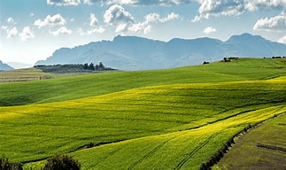

Importância do campo para a cidade
A interdependência entre o campo e a cidade é evidente em diversas áreas, desde a produção de alimentos até a preservação ambiental e cultural. Reconhecer e valorizar a importância do campo para a cidade é essencial para promover um desenvolvimento urbano sustentável e garantir o bem-estar das gerações presentes e futuras.
Saiba Mais 